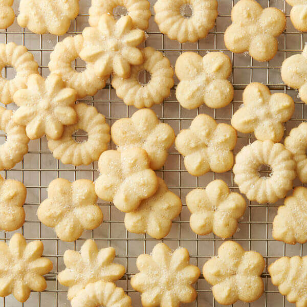

Spritz Cookies
When I am looking for a christmas cookie recipe I want something simple and easy.
No one wants to spend all day on one batch of cookies. This Spritz Cookie recipe
has minimal ingredients and is finished in about one hour.
Ingredients
- 1 cup butter, softened
- 2/3 cup sugar
- 1 egg
- 2 teaspoons vanilla extract
- 1/2 teaspoon salt
- 2 1/4 cups all purpose flour
Directions
- Heat oven to 400°F
- Combine all ingredients except flour in bowl. Beat at medium speed until creamy.
Add flour; beat at low speed until well mixed. Prepare dough as directed by variations
below, if desired. (If dough is too soft, cover and refrigerate 30-45 minutes.)
- Place dough into cookie press fitted with template. Form desired shapes, 1 inch apart,
onto ungreased cookie sheets.
- Bake 6-8 minutes or until edges are lightly browned.
- Allow to cool on wire racks.